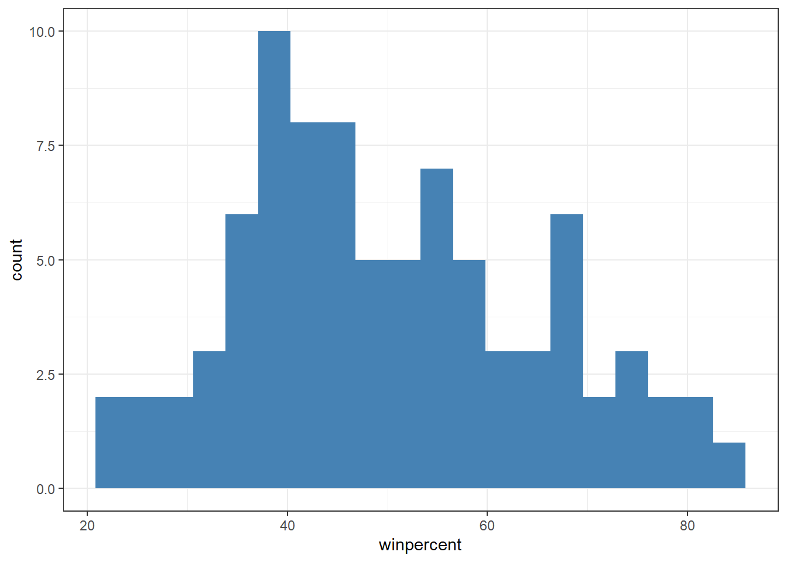

There will be more analysis in PCA in this document
The following will be just a loading of the candy data.
Data import
This data is originally gathered from the 538 website.
candy_file <-"https://raw.githubusercontent.com/fivethirtyeight/data/master/candy-power-ranking/candy-data.csv"# save the data link into a variable candy_filecandy =read.csv(candy_file, row.names=1)#use read.csv to save the data into a data frame variable 'candy', and eliminates the first header so that row names start with the flavorshead(candy)
chocolate fruity caramel peanutyalmondy nougat crispedricewafer
100 Grand 1 0 1 0 0 1
3 Musketeers 1 0 0 0 1 0
One dime 0 0 0 0 0 0
One quarter 0 0 0 0 0 0
Air Heads 0 1 0 0 0 0
Almond Joy 1 0 0 1 0 0
hard bar pluribus sugarpercent pricepercent winpercent
100 Grand 0 1 0 0.732 0.860 66.97173
3 Musketeers 0 1 0 0.604 0.511 67.60294
One dime 0 0 0 0.011 0.116 32.26109
One quarter 0 0 0 0.011 0.511 46.11650
Air Heads 0 0 0 0.906 0.511 52.34146
Almond Joy 0 1 0 0.465 0.767 50.34755
#test the results of candy to ensure proper data frame was made
Q1. How many different candy types are in this dataset?
nrow(candy)
[1] 85
85 candy types total.
Q2. How many fruity candy types are in the dataset?
sum(candy$fruity)
[1] 38
38 total fruity candy types are in this dataset.
Q3. What is your favorite candy (other than Twix) in the dataset and what is it’s winpercent value?
candy["Reese's Peanut Butter cup", ]$winpercent
[1] 84.18029
Reese’s Peanut Butter cups have a winpercent of 84.18029.
Q4. What is the winpercent value for “Kit Kat”?
candy["Kit Kat",]$winpercent
[1] 76.7686
76.7686 is the winpercent value for kitkat.
Q5. What is the winpercent value for “Tootsie Roll Snack Bars”?
Q6. Is there any variable/column that looks to be on a different scale to the majority of the other columns in the dataset?
Only winpercent seems to have a different scale to the other columns in the candy dataset.
Q7. What do you think a zero and one represent for the candy$chocolate column?
They represent whether there are any gaps in the dataset for the specific variable, for example if the chocolate had an empty space for rating for a person it would have a slightly lower complete_rate and slightly higher n_missing.
Q8. Plot a histogram of winpercent values using both base R and ggplot2.
hist(candy$winpercent)
#ggplot version of histogramlibrary(ggplot2)ggplot(candy, aes(winpercent)) +geom_histogram(bins=20, fill="steelblue") +theme_bw()

Q9. Is the distribution of winpercent values symmetrical?
No, it seems to be centered on lower percentages, with a tail towards higher percentages.
Q10. Is the center of the distribution above or below 50%?
mean(candy$winpercent)
[1] 50.31676
median(candy$winpercent)
[1] 47.82975
If using the mean, then it is above 50%, however with a median use case it is below 50%.
Q11. On average is chocolate candy higher or lower ranked than fruit candy?
Overall Candy Rankings
Q13. What are the five least liked candy types in this set?
library("dplyr")
Attaching package: 'dplyr'
The following objects are masked from 'package:stats':
filter, lag
The following objects are masked from 'package:base':
intersect, setdiff, setequal, union
head(candy %>%arrange(winpercent), 5)
chocolate fruity caramel peanutyalmondy nougat
Nik L Nip 0 1 0 0 0
Boston Baked Beans 0 0 0 1 0
Chiclets 0 1 0 0 0
Super Bubble 0 1 0 0 0
Jawbusters 0 1 0 0 0
crispedricewafer hard bar pluribus sugarpercent pricepercent
Nik L Nip 0 0 0 1 0.197 0.976
Boston Baked Beans 0 0 0 1 0.313 0.511
Chiclets 0 0 0 1 0.046 0.325
Super Bubble 0 0 0 0 0.162 0.116
Jawbusters 0 1 0 1 0.093 0.511
winpercent
Nik L Nip 22.44534
Boston Baked Beans 23.41782
Chiclets 24.52499
Super Bubble 27.30386
Jawbusters 28.12744
Nik L Nip, Boston Baked Beans, Chiclets, Super Bubble, and Jawbusters.
Q14. What are the top 5 all time favorite candy types out of this set?